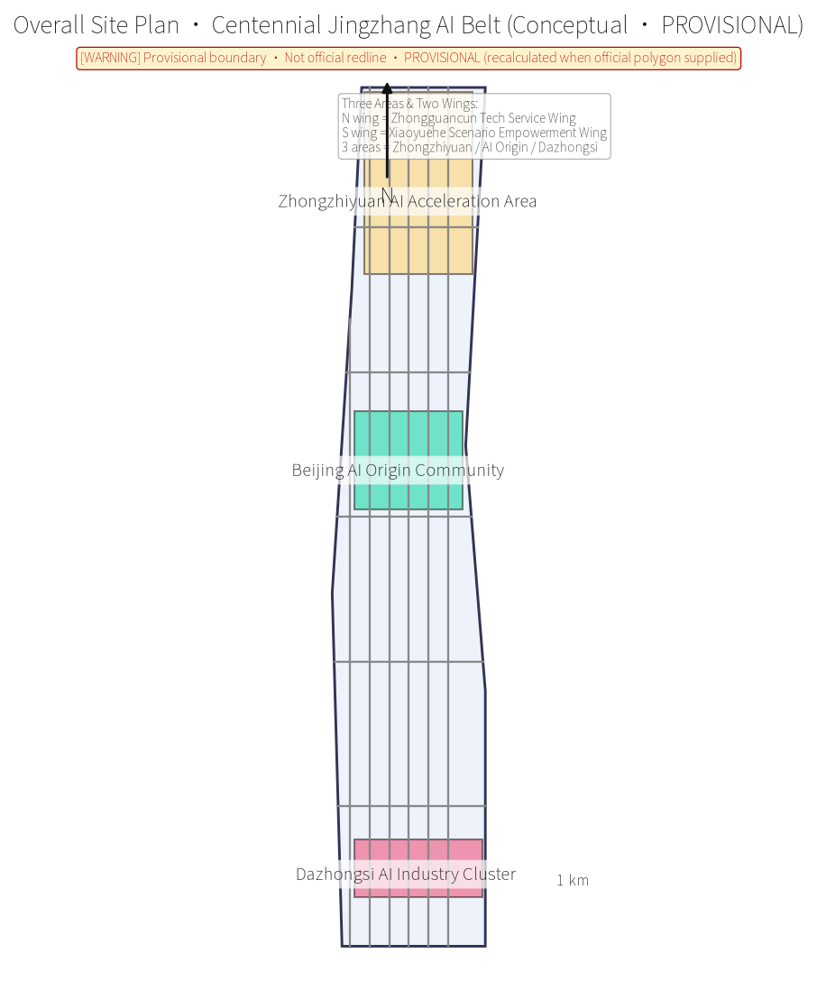
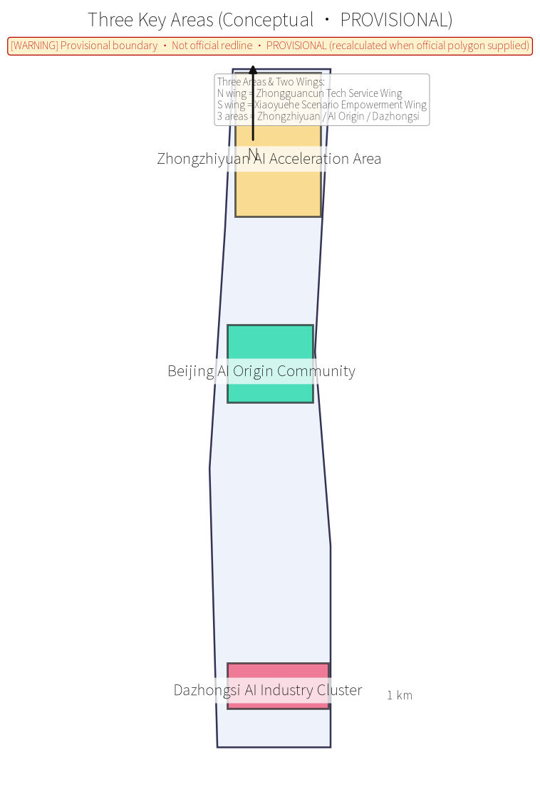
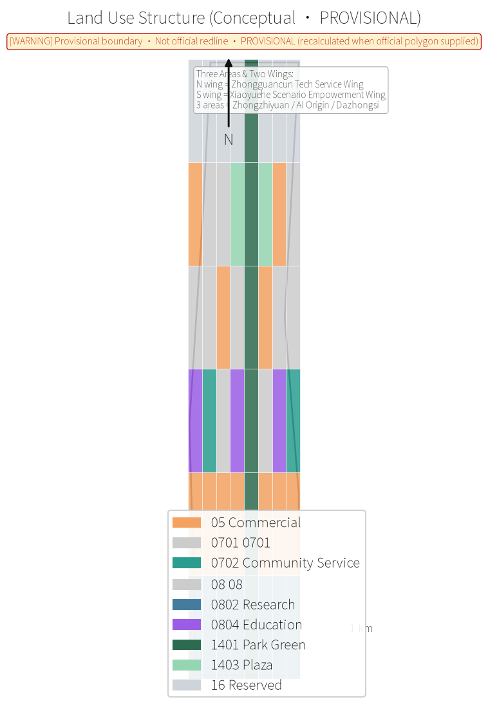
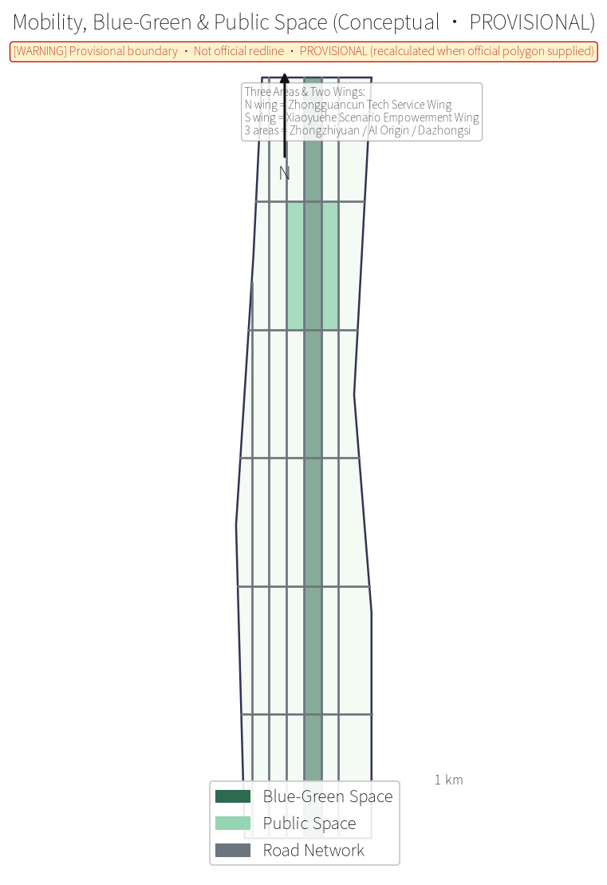
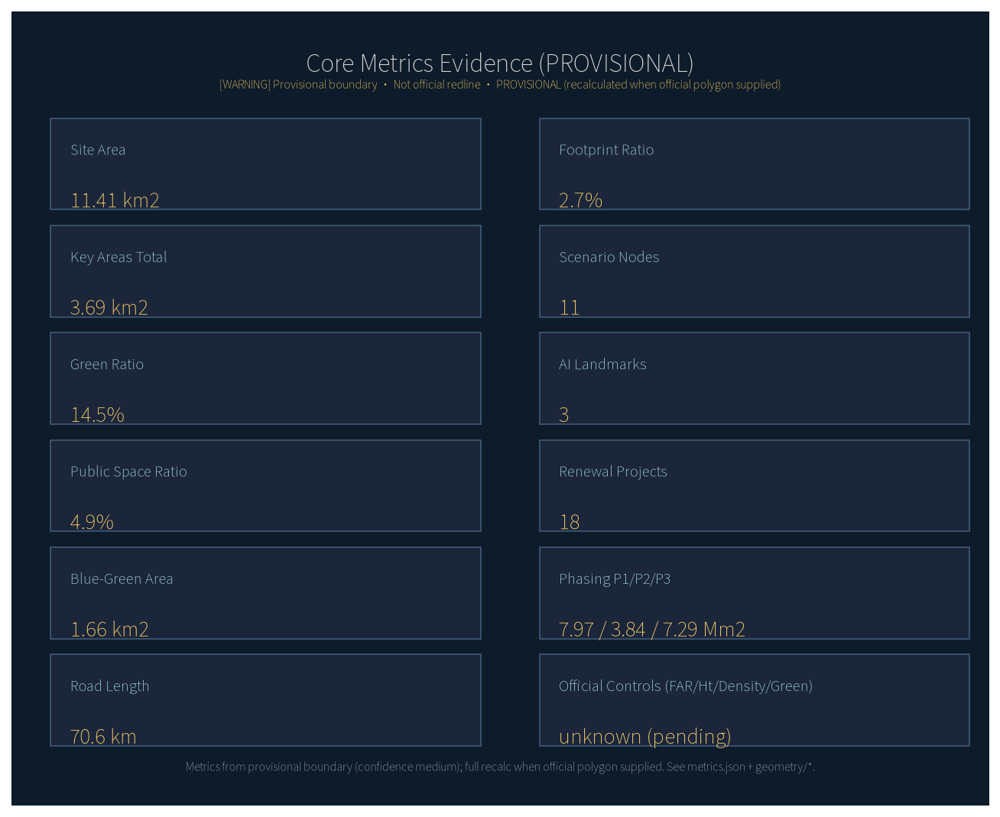

Overall design area on provisional boundary; all areas recomputed after official polygons.

Coordinated research — overall design — key areas.
Three key areas total 3,692,893.00 sqm.

Research, commercial, education, community service led.

Road length 70,594.46 m.

Green 1,659,832.04 sqm; public 559,422.15 sqm.
Footprint ratio 0.03.
18.00 projects; 11.00 nodes.
Nine real Luoduo ecosystems provide operable scenarios.
Green ratio 0.15; public ratio 0.05.

17 official + 6 agent tasks; 15 design-depth items.
22/22 deterministic + 14/14 depth; four gates reviewed.
Announcement, taskbook, ecosystem auth, boundary package.
A-BOUNDARY-001 registered in assumptions.json.